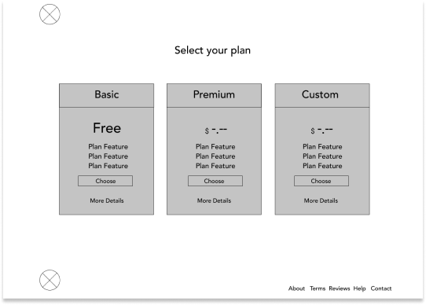
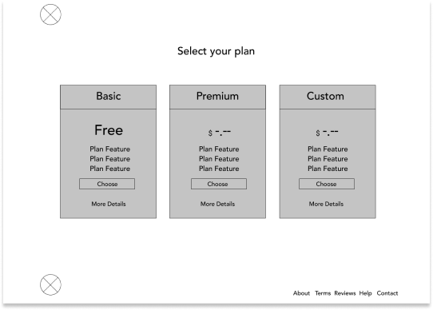
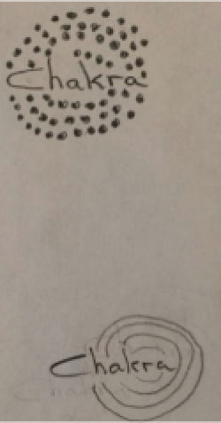
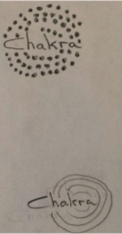
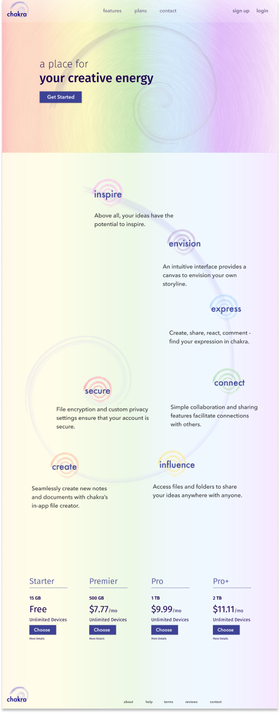
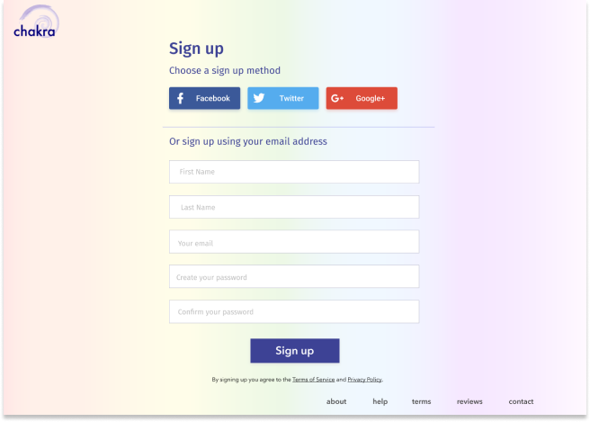
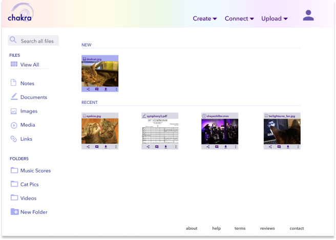

Everyday people happen upon homeless, abandoned or stray animals that need help. Some might attempt to get support from local rescues, only to find that the rescue is full and has little or no resources to help. When this happens, the individual is often faced with the decision as to whether they take it upon themselves to help the animal or let the animal be and hope that the next person that comes along might help. Those with limited financial resources fear that they won’t be able to afford the cost of helping the animal. Many attempt to do so anyway, often at the expense of their own well-being.
View PrototypeWhen stray or abandoned animals are rescued, at minimum they will need a basic health exam, flea/worm medication, and vaccines. Many will also need to be spayed or neutered. An injured or sick animal will need even more. Costs can amount to hundreds, or even thousands of dollars, potentially creating hardships for well-meaning individuals. This can result in the animal not getting the necessary care that is needed, or even deter individuals who desire to rescue..
RescueFund is a mobile application that assists rescuers in obtaining donations for the veterinary care of a recently rescued animal. Contributions from donors will only be accessible to veterinary clinics, ensuring that 100% of the donations are going directly to the costs of the veterinary procedures needed by the rescued animal. Because choosing to rescue an animal is a huge responsibility, the completed application will also provide resources such as a directory of local low-cost veterinary clinics, information on how to safely find a rescued animal a “forever home”, and further education regarding animal rescue.
To gain a deeper understanding of current fundraising platforms I analyzed three potential competitors: GoFundMe, Fundrazr and Waggle.
Based on my analysis I determined that my application would need the following in order to stand out:
Of my competitors, Waggle was the only fundraising site that was focused solely on animal health care. Their platform was geared more towards pets and pet owners needing funds for various medical procedures, rather than for rescuers and rescued animals.
Rescuing an animal is a time consuming tasks and animal rescuers are often on the go. Being able to easily and quickly set up a rescue fundraiser via smartphone and share it immediately with networks is of utmost importance.
This ensures that the donor’s money is going only towards the veterinary care for a rescued animal and gives the donor confidence when donating.
I created a survey in order to discover user’s interest in features potentially
offered by a new cloud storage service. Upon survey analysis I found that free storage space, the
ability to upload files from a computer or mobile device, and sharing files or folders were the
features of a cloud service that users considered to be of utmost importance.
I also found that 80% of users use a cloud service for personal endeavors.
Using the findings of my survey and research, I created two user personas to represent my target audience.


To better understand my users and their needs, stories were created for both new and returning users..
VIEW USER STORIES
To optimize workflow organization, I first sketched user flows of my high priority user stories. After completing the sketches, I used Figma to create digital versions.
 VIEW
USER FLOWS
VIEW
USER FLOWS
Taking my user flows into consideration, I sketched wireframes of the desktop application and then used Figma to create digital versions.

 

The wireframes helped me to visualize how my research and ideas would be organized into an app. My main goal was to create an intuitive interface that would allow users to perform the high priority tasks in my user stories with ease.
VIEW WIREFRAMESIn order to brainstorm the name and concept for my new cloud service, I went for a jog. By the time I finished, I determined that I would base the branding of my cloud service on the chakra system and simply name it “chakra”. My primary reason for basing my cloud’s brand and concept on the chakra system was the visualization of the cloud service as an “energy center” for creativity. I also liked the idea of finding connections and incorporating the visual and conceptual elements of the chakra system into a cloud service.
To come up with ideas for the logo, I took to sketching...
 


Striving for simplicity, I decided to go with a combination of my first idea and another early idea.


I wanted the spiral to have an organic looking brush stroke, reminiscent of
the enso influenced sketch.
With this in mind, I used Ilustrator to create my digital
refinements of the logo.
The spiral in the logo is symbolic of the chakra energy center. It is also a shape the occurs frequently in nature, thus is very familiar, appealing and comforting. I used Futura as the font for the logo.
For body text, Avenir Next was chosen for its overall warmth and legibility. It also adds a sense of continuity to the design since it is modeled after Futura.

Fira Sans, a humanist san-serif font was my choice for titles and headings. This font was chosen for its modern look and easy readability.

Because I desired to incorporate the rainbow of colors associated with the
chakra system into my design, a conservative color palette was chosen.
I was aware that incorporating the chakra “rainbow” would be challenging to implement in a tasteful
manner, but decided to see if I could make it work.
For my dominant color I decided to use a dark shade to complement, yet not interfere or worse yet, clash with the rainbow. I chose a dark purple due to its association with creativity, wisdom, ambition and independence.
Referencing my wireframes and branding concepts, I used Figma to create hi-fi mockups for both a desktop and a mobile device. In my mockups I included a homepage and dashboard, as well as screens for sign up, log in and account settings.
   After conducting preference tests and making adjustments to my mockups, I
exported my work to InVision and created clickable prototypes.
I then conducted user testing on my desktop prototype. I had the user perform the tasks of signing
up for an account, uploading a file, renaming the file, accessing account settings and signing out.
Along with in-person testing, I also exported my prototype to Maze Design order to receive
additional remote feedback. In both cases all tasks were completed successfully with the exception
of renaming the file. Because of this I decided to change my design to give the user the option of
clicking on the actual filename in order to rename the file.
This project was a major learning experience for me. While I believe that I was
successful in creating an intuitive interface with a slightly different aesthetic than most known
cloud services, there are some things that I would do differently if I had more time.
I think it would have been beneficial for me to conduct additional research after deciding on the
concept for my cloud service. Because I decided to target a somewhat niche audience, it would have
been nice to survey and perform additional user testing on individuals specifically involved in
creative or healing arts. I believe additional feedback from them would have been invaluable to the
design of chakra.
During the design process, I also had ideas about incorporating some kind of weekly or daily short
creative activity, exclusive to chakra, that would encourage members to be connect and share their
creations. This, of course is not a function of a typical cloud service, however if chakra was ever
to be developed beyond a student project, this is a concept that I would further consider and
research.